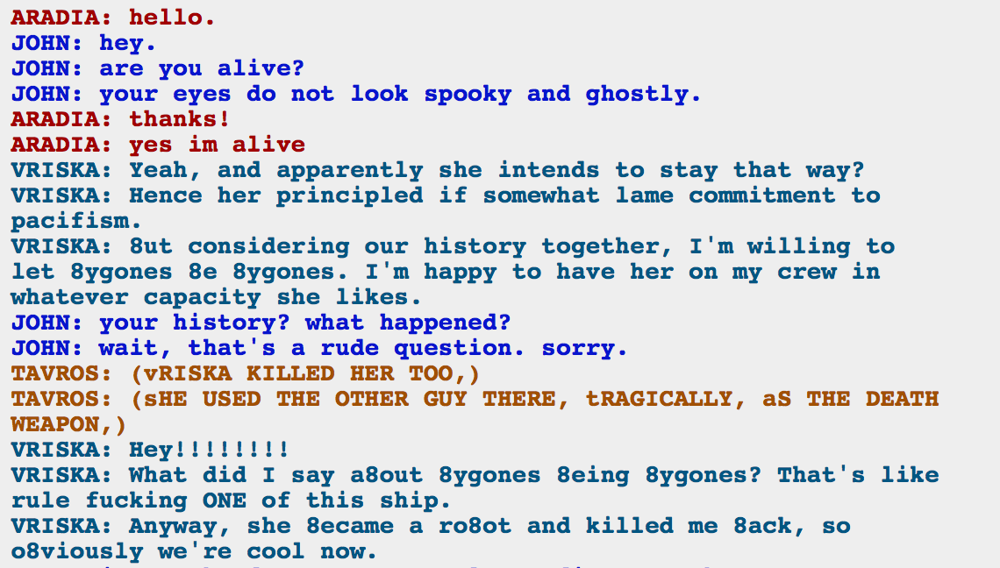
Obviously they’re cool now.
I find it amusing that I went from loving Tavros and hating Vriska to hating Tavros and loving Vriska. Tavros is just such a pathetic doormat who won’t even speak his opinions above a mumble.
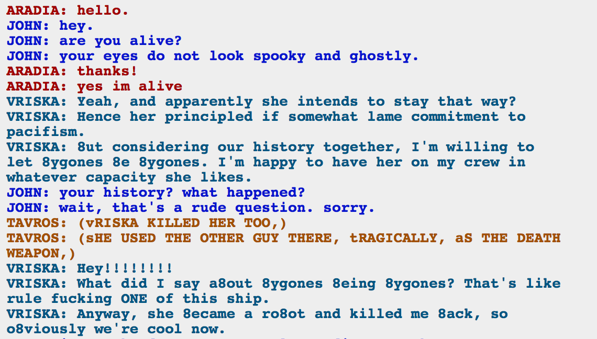
Obviously they’re cool now.
I find it amusing that I went from loving Tavros and hating Vriska to hating Tavros and loving Vriska. Tavros is just such a pathetic doormat who won’t even speak his opinions above a mumble.

Sollux is the worst at explaining things! And then he gets mad at John for being confused. He’s the one who brought up Eridan and being half dead for no apparent reason!
Sollux is so adorable and ornery, I love him.
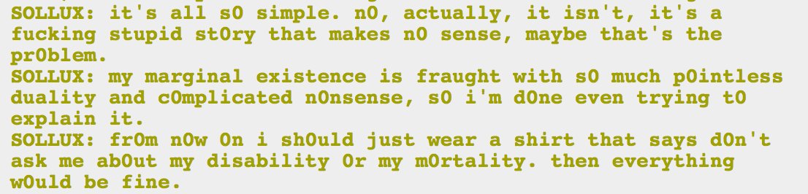
I want to form the Committee of People for the Hugging of Sollux. Because boy does he need a hug. Where is Feferi? She needs to hug him, poor bb.
At first I was going to say that Sollux is adorable because he has problems just like disabled people, except NOTHING like them, and then I started imagining people telling Sollux to just eat fish oil to fix his eyes. Which I would love to see. And then I went looking to see if there were “Don’t ask about my disability” shirts out there, because I know disabled people who said they would like something like that, but all I got was Homestuck stuff.
Which is totally reasonable, that’s an awesome line.
Aaaaaaaah. That’s a really good question. Because like, for most of the characters there’s a really strong focus on their development, and since they’re teens and we see them roughly over a three year period, there’s a lot of developing they should do. Most of the characters I’m thinking about who haven’t changed much are the ones who haven’t had much screen time lately. Eridan, Feferi, Nepeta, Equius…They all died and kind of just languished off screen. For everybody else, they’ve had a lot of development, although to come up with a good analysis I’d probably need to go back and look at where they started and where they are now, y'know? I’m worried that my own biases are coloring my memory. For example, I want to say that it seems like Tavros hasn’t developed very much, but that might be unfair.
I think Vriska has had some of the most development–she’s dealt with a lot of her issues and spent a lot of time figuring out who she is and developing a moral compass.
The alpha kid arc was, more than anything really about them growing as people. John dealt with being an unintentional asshole, Roxy dealt with her alcoholism, Dirk with his self-hatred and being clingy, Jane with bottling up her opinions and emotions…
Hell, even Caliborn got a lot of development. He’s learned team work and social skills…even if those social skills are not shooting Gamzee…
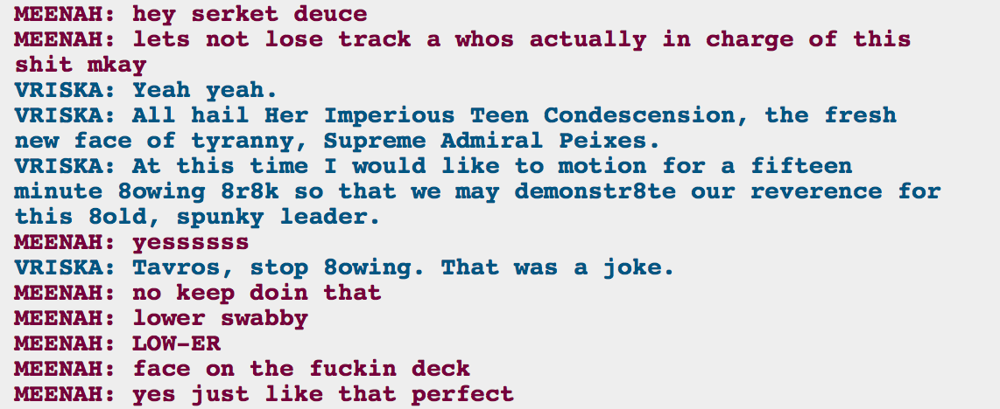
No commentary for this one, it is just high comedy.
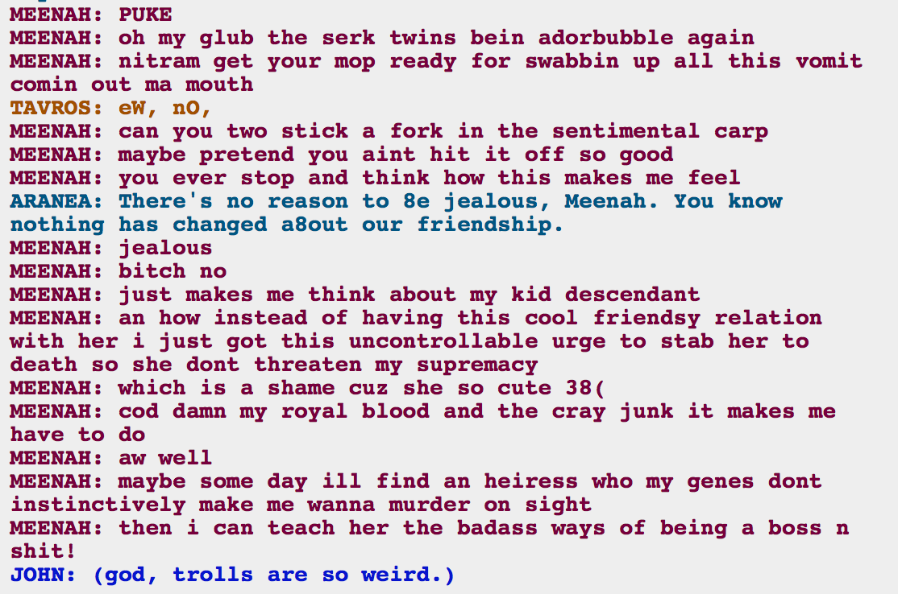
AN HEIRESS HER GENES DON’T INSTINCTIVELY MAKE HER WANT TO MURDER ON SIGHT.
Just like the Condesce and Jane! Apparently Alternia!Meenah had the exact same desire.
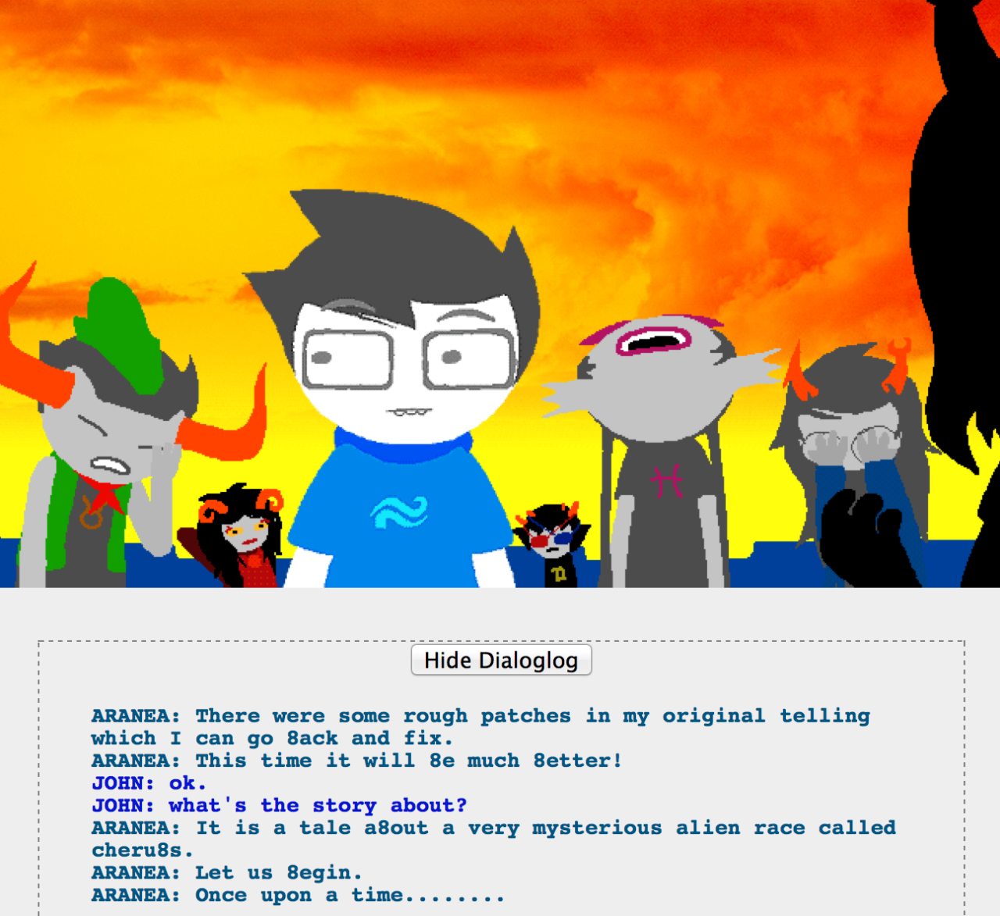

That is exactly my face right now, guys. 100% excitement and wonderment at the incoming infodump. YAY! Educate me, Aranea!

Is this alternate timeline Calliope?
Also holy shit I didn’t think they would literally get wings. Big, feathery wings! Cool!

Huh, I wonder if this is how Lord English is able to track Calliope through various dream bubbles. If they can do it across light years, he could probably do it through whatever distance exists in the Furthest Ring.
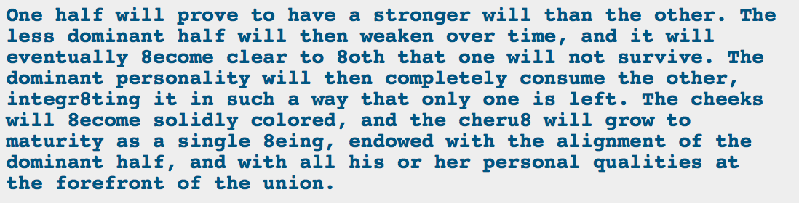
I went back and watched Caliborn: Enter and the moment he wakes up, his cheeks turn completely red. So at that point Calliope really was dead. Except there was no integration, no union, no consumption of personality.

Well, I guess now we know where Caliborn gets his super ridiculous destructive side.
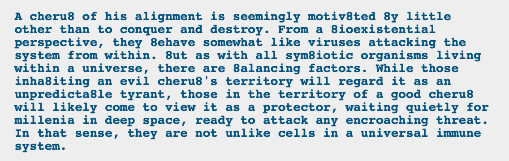
!!!!!!! Viruses!
Or perhaps…a parasite?
Lord English may have taken that a little too seriously.
I’m super curious as to just what the red-aligned cherubs would be balancing out. If they’re destructive, there needs to also be a strong creative force, right? Something that would, if uncontrolled, create an excess of…whatever. Planets? People? Would those under a green-aligned cherub just keep procreating and spreading out to the point that they suck up all the resources or…? Frankly, I can’t think of anything.
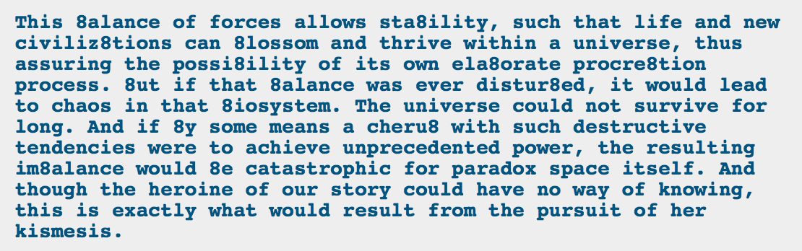
I know this is portending Lord English, since he’s obviously a destructive cherub with ridiculous power, but I’m still really curious as to what would happen if a creative/protective/whatever cherub were to achieve too much power. Since space is infinite, as far as we know, and any civilization that grew too large would die anyway.

[Insert quasi-feminist rant about pregnancy being used to denote the weaker partner and impregnation being a form of dominance even when they are divorced from gender]
This sounds a lot like where Calliope/Caliborn lived. Planet circling a star, which later…well, the star didn’t become a black hole, it got sucked into one created by the kernelsprite, but close enough, right?
If these are Calx2’s parents, I’m guessing that the male here didn’t end up entering the game or anything, so it’s a normal black hole and not the result of a dead session. I could be wrong, though. Maybe dead sessions happen for cherubs.
I was wondering what was up with these two! I hope those deep pocketed fans were pleased with the epic death of their trolls.

Ah my god it’s AURYN!
You know, from the Neverending Story. Like dude does this mean cherubs grant wishes or something, are they responsible for the making of the world? Damn, I need to go reread that book…


The zoologically dubious, hm. Another thing I at first thought was just humorous word play, but now it takes on an entirely different meaning.
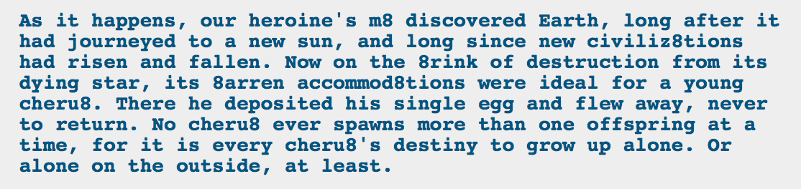
So, a species that lives light years away from any other member and can take like, a decade to mate and apparently often ends in the death of one or both participants, only has one offspring at a time? I know they’re either almost immortal or actually immortal, but that seems like a recipe for extinction.
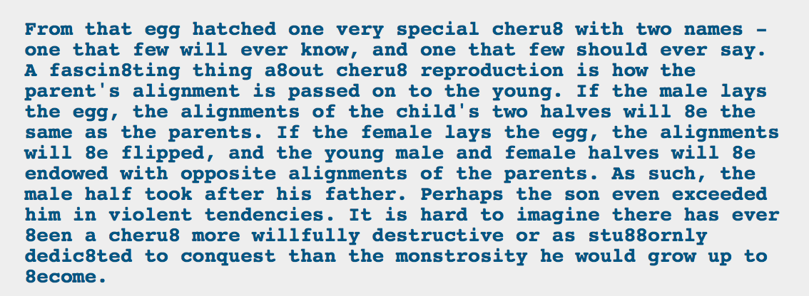
Duh-duh-dun!
Still not sure how Caliborn/Calliope wound up in the room on the meteor on Earth, with the juju chains and the sarswapagus.
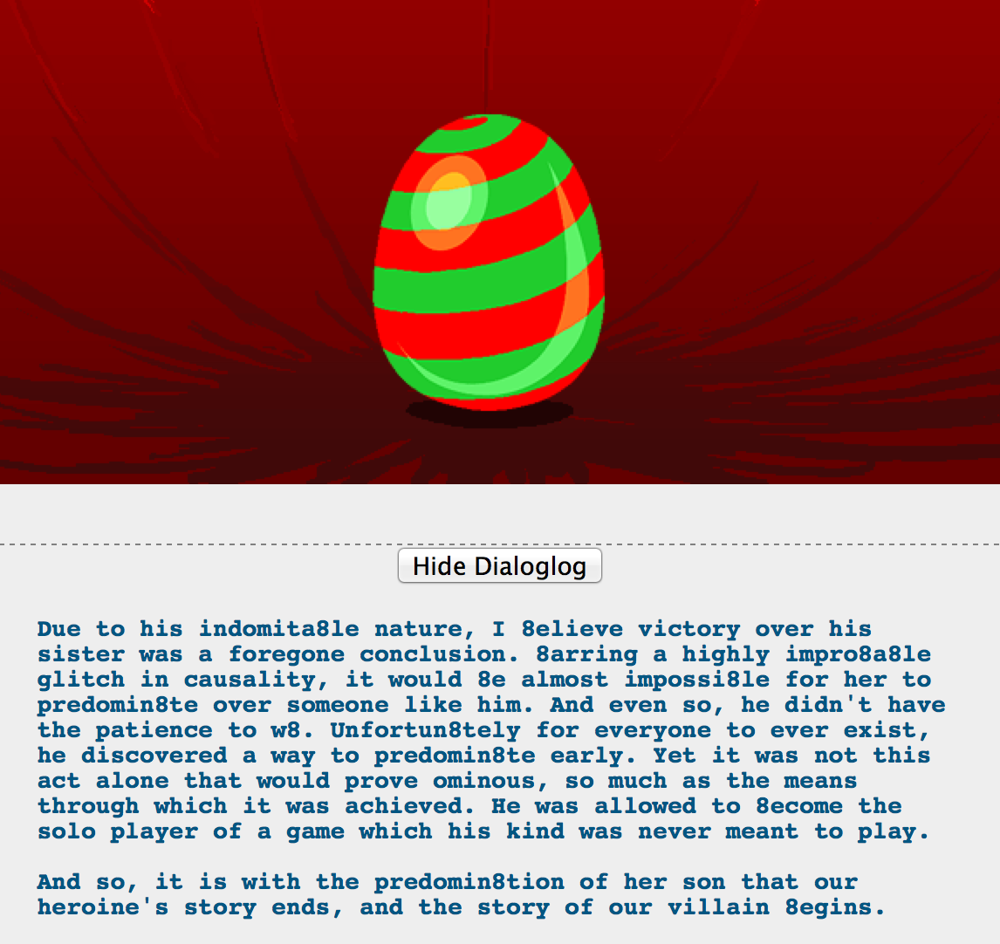
And now the cherub thing looks like its Christmas themed.
Sounds like Calliope’s quest is going to be kind of ridiculously hard. That doomed timeline dominant Calliope is going to be haaaard to find.

More meta jokes and fish puns!
Faaaaaaaascinating.
So combining the jujus was kind of like cherub sex.

So, Nepeta and Feferi just showed up?
Lucky Meenah hasn’t noticed yet, or at least seems to not have noticed. No being violent with darling Feferi.
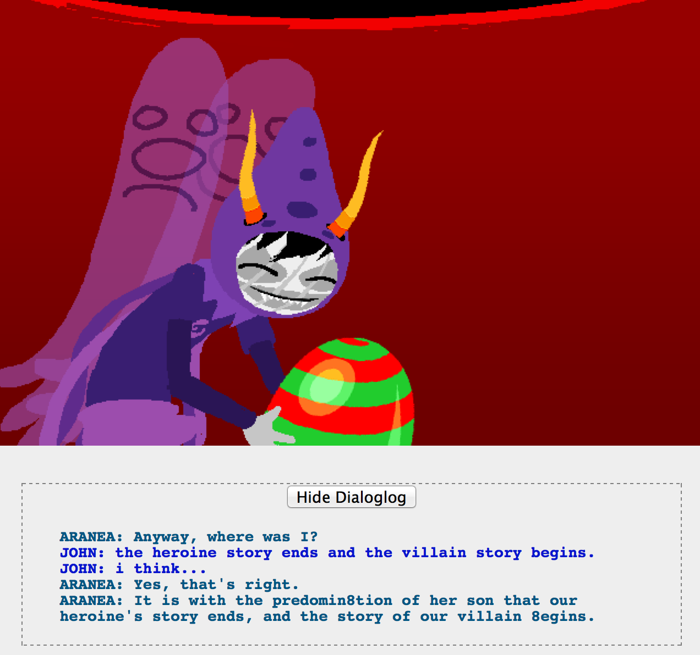
OH.
OH OF COURSE.
IT WAS MOTHERFUCKING GAMZEE. HE’S BEHIND EVERYTHING.
Motherfucker.
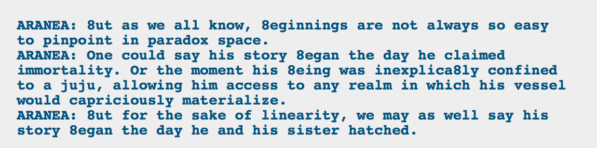
So she’s obviously talking about lil Cal being the juju Caliborn/Lord English was confined to, but…something about the wording and what we’ve seen so far doesn’t make sense. She says his “being was inexplicably” confined, not that he himself was confined. Couple that with the fact that we know Lord English was, in some way, living inside Doc Scratch, and that we saw Caliborn potentially using lil Cal to possess Jack Noir.
So maybe like, Caliborn’s soul wound up in lil Cal, and that’s why Lord English seems crazy.
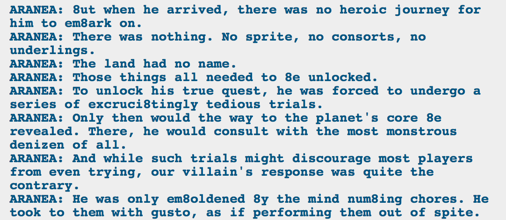
Oh man, so Caliborn’s punishment for his arrogance wasn’t like, pain, it was boredom?
That’s actually a really smart way to punish him.
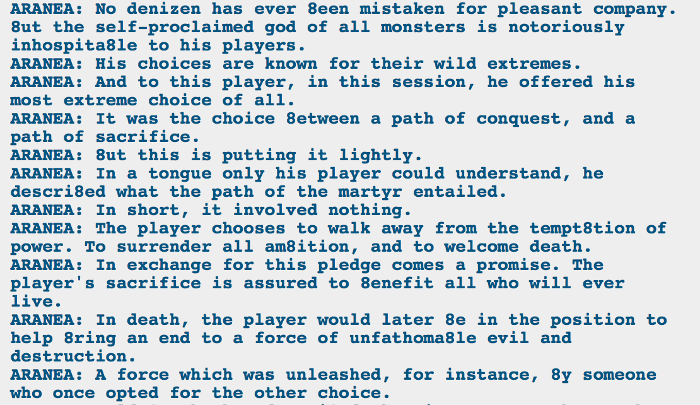
I get the feeling that this means there will have to be a character who chooses this path in order to take out Lord English. No idea who specifically, though. All of our characters so far are probably ineligible. Someone new coming along, maybe?
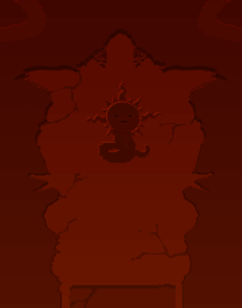
Also like, can we take a second to acknowledge how adorable the Yaldabaoth caricature is? That thing is adorable!
Also its head is the god tier symbol for light. Iiiiiiinteresting.


And on the subject of really cute things, AW THIS IS SO ADORABLE. Baby Caliborn is so cute and Gamzee, that fucker, looks so loving.
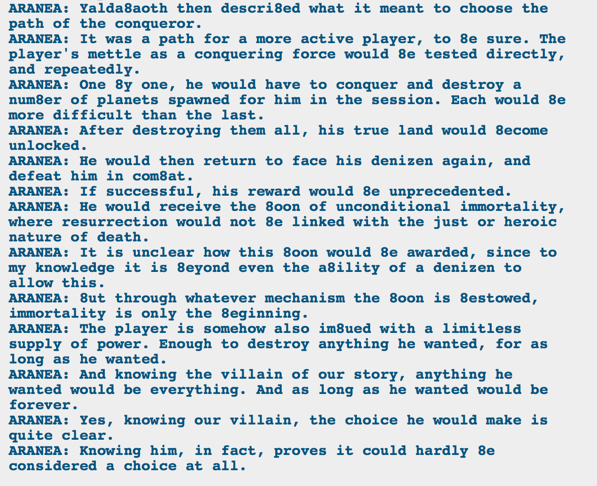
BACK ON TOPIC!
Interesting how the path of the conqueror is listed as the active choice, so the martyr might be passive, just like the class pairs we’re already familiar with.
I suppose if Lord English was granted immortality with the god tier caveats, it wouldn’t be much of a thing at all. Anyone killing him, under any circumstances, would be just, since he’s just such a terrible dick.
I wonder if the limitless supply of power is the green sun–or is his power going to surpass even that?
While we’re on the topic of vaguely suspicious wording, that last bit, about it being hardly considered a choice at all…that’s a bit iffy, too. Obviously Caliborn wouldn’t choose otherwise, but we’re also used to our characters maybe not actually having choices–if everything is predetermined, does free will actually exist? Could someone be using Caliborn, or had this all preplanned in the vast temporal bullshit that is Homestuck?
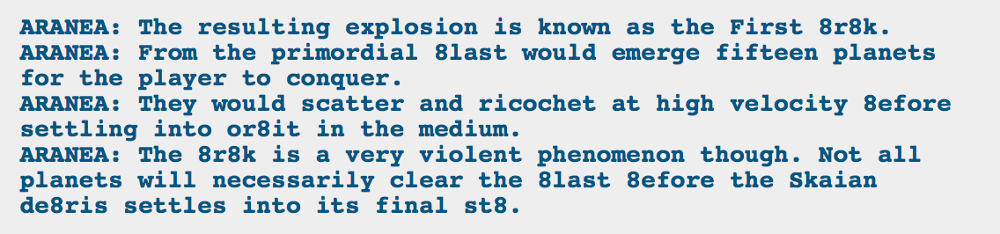
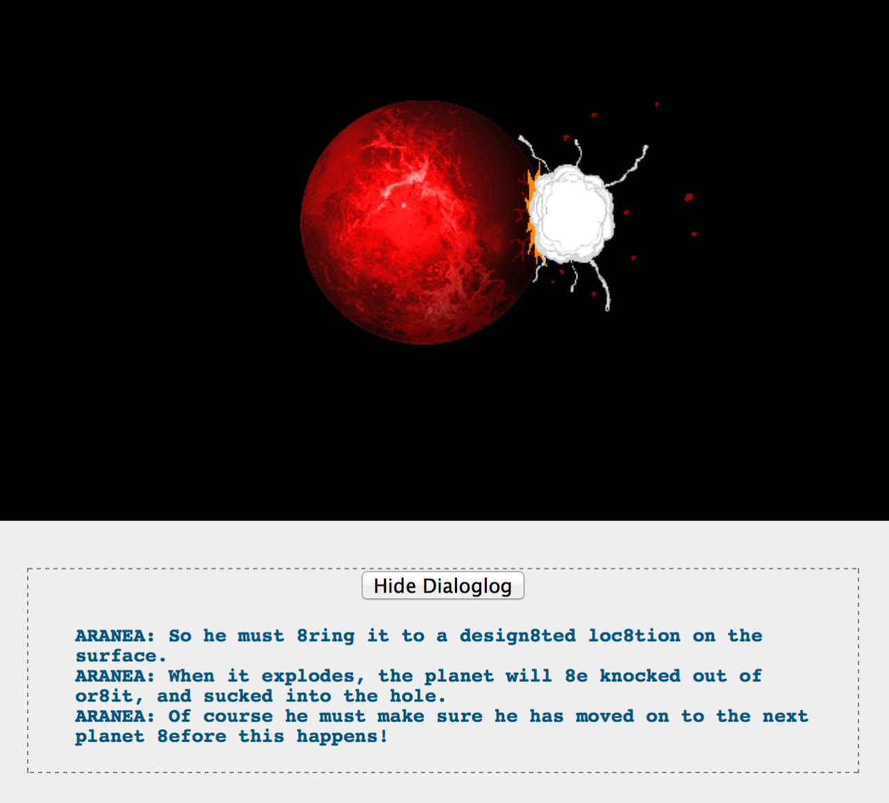
The dead session is literally pool. It is actually billiards.
Which is fitting, I guess, since you can play it alone. But still.
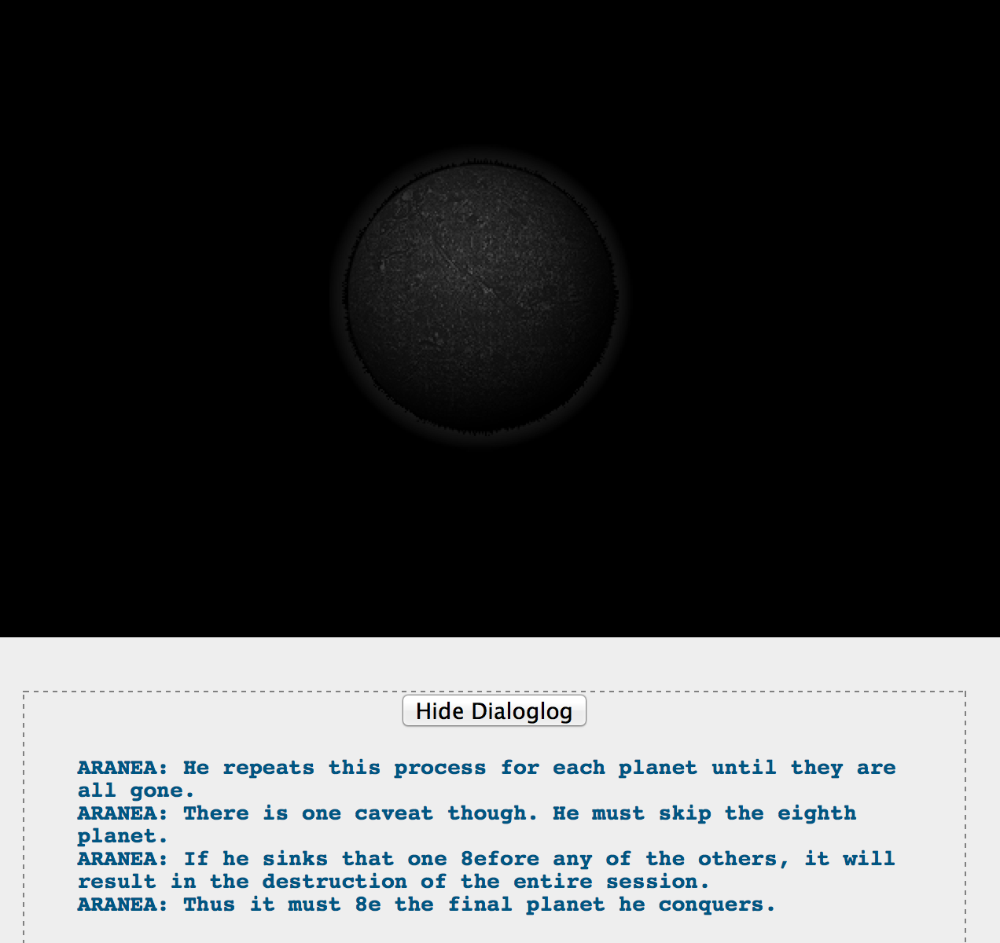
HMMMMMMM.
So the other day I was reading old stuff and came across the black queen’s storyline from the beta troll’s session, where she’s banished to Alternia and then is approached by Doc Scratch. And then becomes Snowman/8 from the Felt. So this kind of explains why Snowman wasn’t a greeny like all of English’s other minions…and possibly why killing her would destroy the universe?
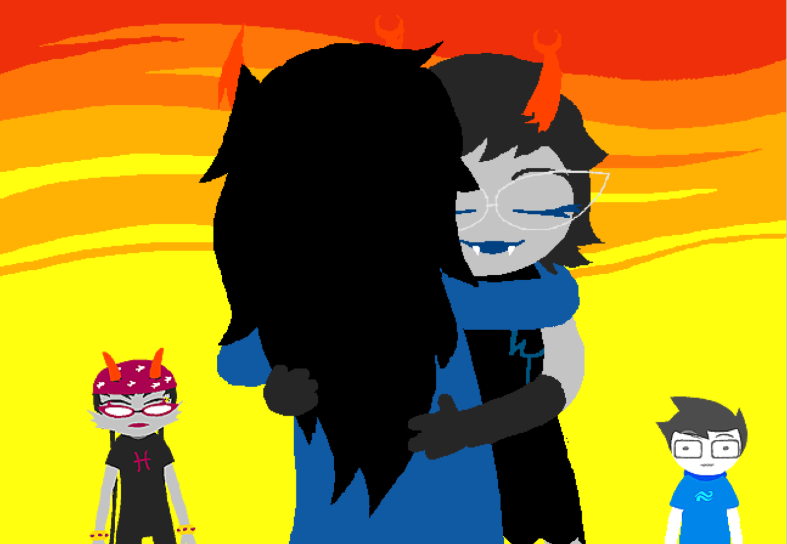
Awwwwwwwww that is so cute. A Serket hug!
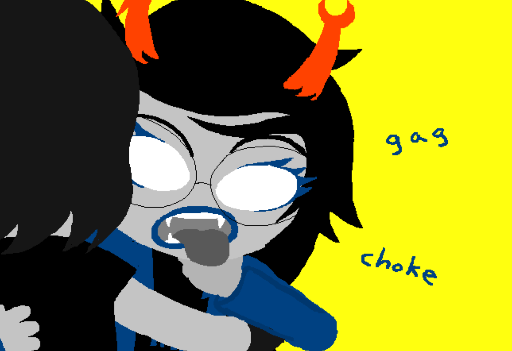
Oh, of course, Vriska is just being an asshole.
But that’s why we love her!

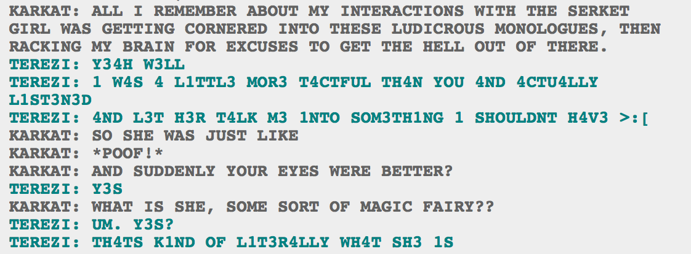
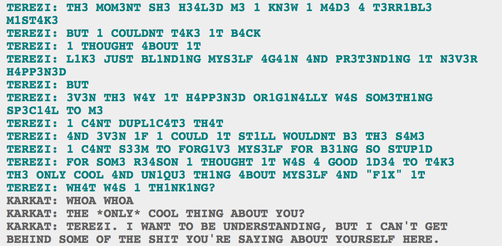

Oh dear sweet lord, Terezi, you poor thing! No wonder she’s all out of sorts. Being blind was part of who she was, and it connected her to her lusus, and then to just have it healed! I mean, what a terrible shock it must have been, to be able to see with your eyes and with your nose.
And to hide it from everyone. I know she didn’t seem to have any trouble getting around and didn’t even seem to need her cane much, but it must have been horribly stressful and…
Oh, I just want to hug her.
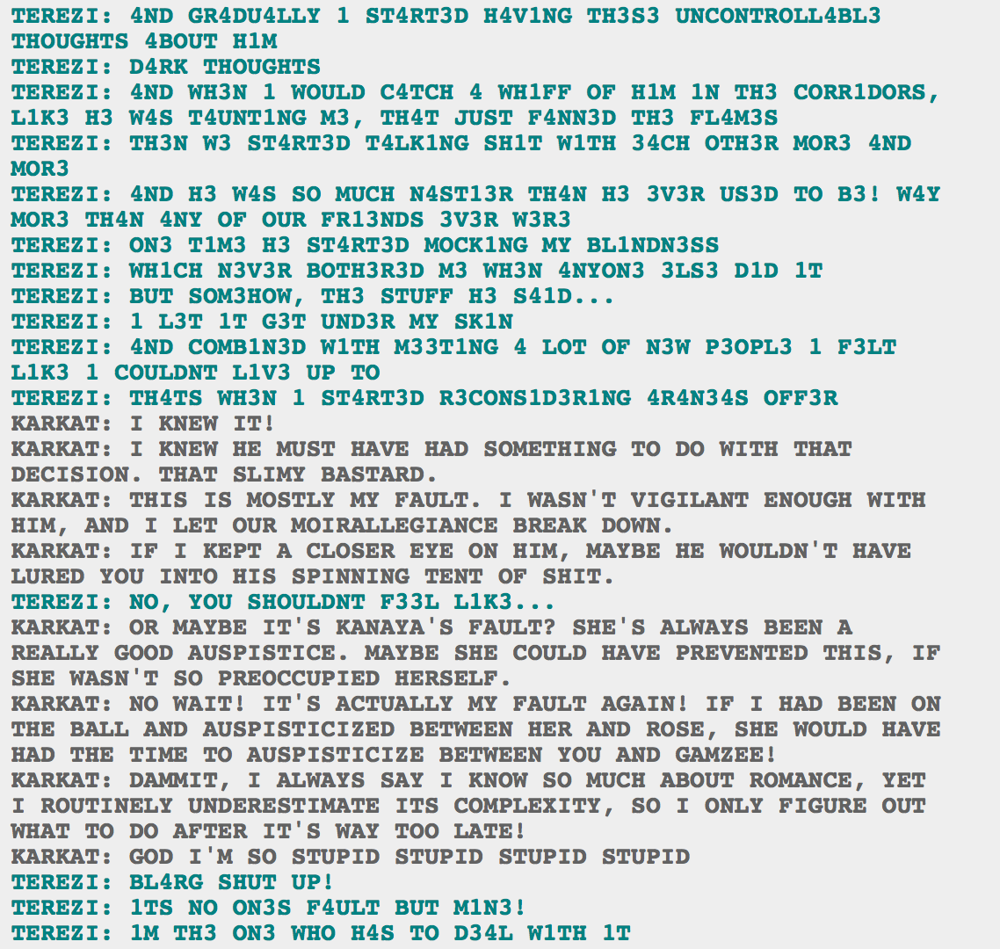
Yeah maturity! Still loving the shit out of all this character growth. And loving that all these teen characters are acting more maturely than a lot of the adults I know.
And he just said he didn’t think Rose had any problems! Karkat, clearly you have no idea what is going on.

Karkat tantrum bingo!
I’m not sure if Dave is just making a joke or if that’s an actual game they play. Because I could totally see everyone on the meteor having bingo cards in their pockets with random subjects on them, just waiting for Karkat to throw a fit.
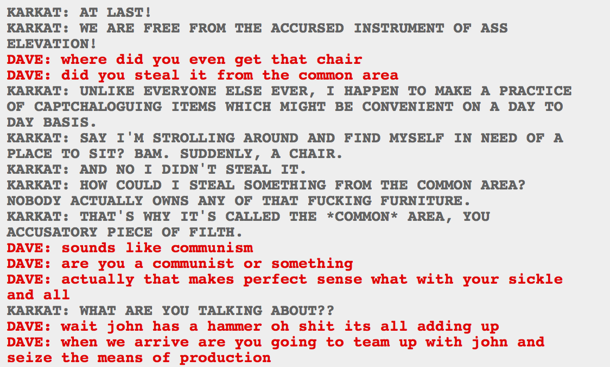
Marxist jokes! Yay!
This is an awesome digression in the middle of an intervention.
I just had one of those moments where I was reading something deep and emotional, and then I realized that everything was written in all caps and half the vowels were replaced with numbers and seriously, what the fuck is Homestuck even.
I think the literary quality of Homestuck is just another way of trolling us, tbh.

See? That’s really fucking awesome. That is some top notch scifi writing. You do not see good time travel stuff written often.
And yet, capslock and Terezi’s quirk. I feel like I’m being pranked because it’s so awesome, but unless you’re talking to another Homestuck fan, how are you going to be like, “Look at how this deals with the problem of free will when you can actually see the ramifications of your choices and possibly even meet versions of yourself that made the ‘wrong’ choice. Terezi isn’t just dealing with the choice that she made, she is dealing with knowing exactly what would have happened if she hadn’t made that choice, and yet still 'W0ND3R1NG’ if it could have turned out differently, and if perhaps making the wrong choice and dooming yourself isn’t the right choice when the right choice means you did something that will haunt you”? That’s really fucking cool but Terezi still says she’s W0ND3R1NG and if you’re not in the fandom that’s going to look absolutely ridiculous.
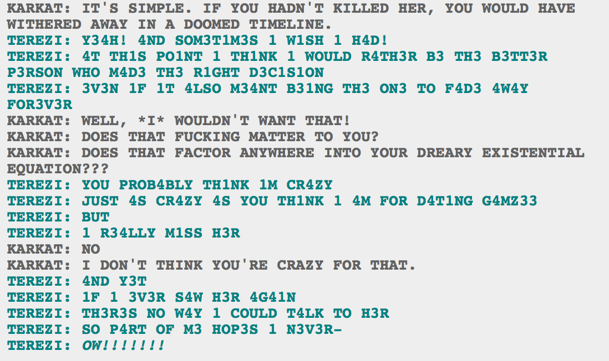
Oh god, Terezi, you poor thing! I wish you had said something sooner so you didn’t have to deal with all this alone for so long.
Also if I’m reading things right, isn’t there basically a Terezi out there who decided not to kill Vriska, so no matter what Terezi chose, there’d be some version of her suffering anyway. Like it doesn’t matter what they do, because there will always be an alpha timeline where they make the choices that Skaia or whatever needs them to make.
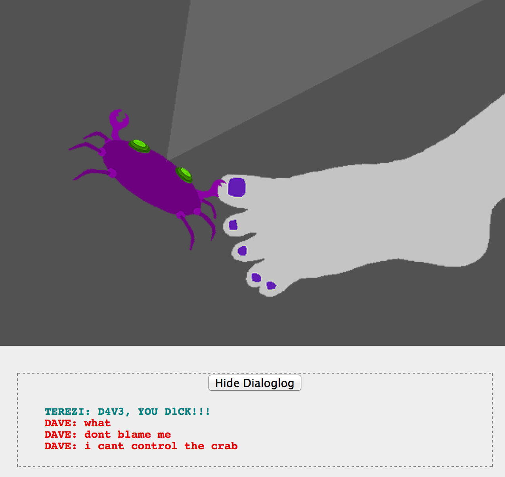
AWWWWWWW that’s so cute! The crab is pinching her toe to get her to stop being all angsty.
I wonder who is controlling the crab, then.
And also why Terezi’s toes are purple. Did she paint them with Gamzee’s blood? :D
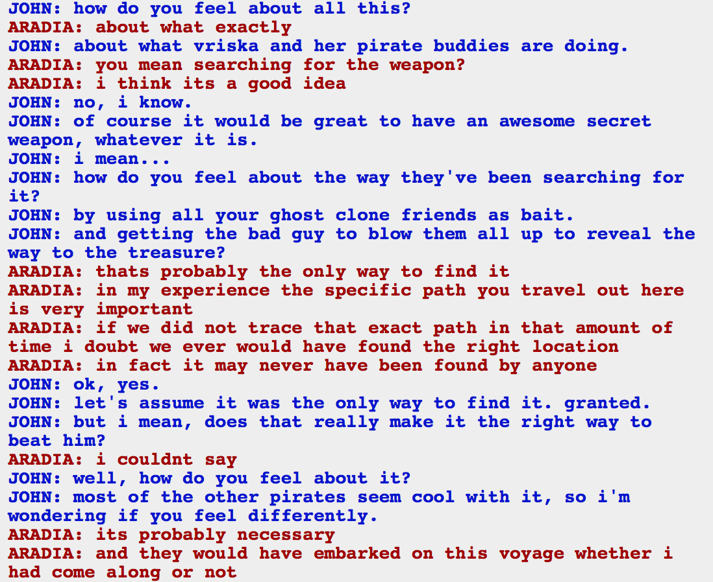
Aradia deserves some kind of award for dodging questions.
Except I don’t think she’s actually dodging the question, I think she’s just landed in that rare place between being callous and cavalier about other people’s deaths and accepting them. She cares, but she’s also not going to let the inevitable upset her, and she’s not necessarily going to judge Vriska, Aranea, and Meenah for being enthusiastic about what they have to do.
And honestly I can’t much blame Vriska for protecting herself against sympathizing with all the ghosties. Lord English is the kind of villain that justifies extreme measures, so if she wants to convince herself that all those Nepetas don’t count, that’s okay. Mostly. Not all of us can be as chill as Aradia.
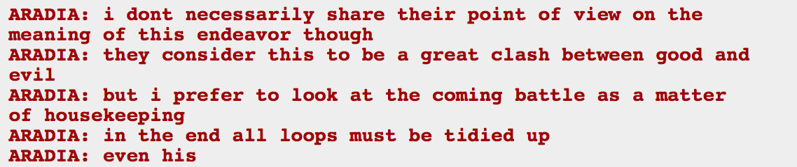
Is this a hero of time thing? I figure she’s talking about time loops, and Dave did seem pretty chill about the alternative Daves…But then Dave is chill about everything. Maybe it’s a result of her having to sacrifice all the Aradiabots to beat the black king. Aradia basically had to orchestrate a mass suicide of her selves, so she probably already dealt with the moral issues there.
Or maybe it’s because she was killed when she was like what, 10 or 11? And lived for years as a ghost afterward. That’s got to skew your perception of life and death.
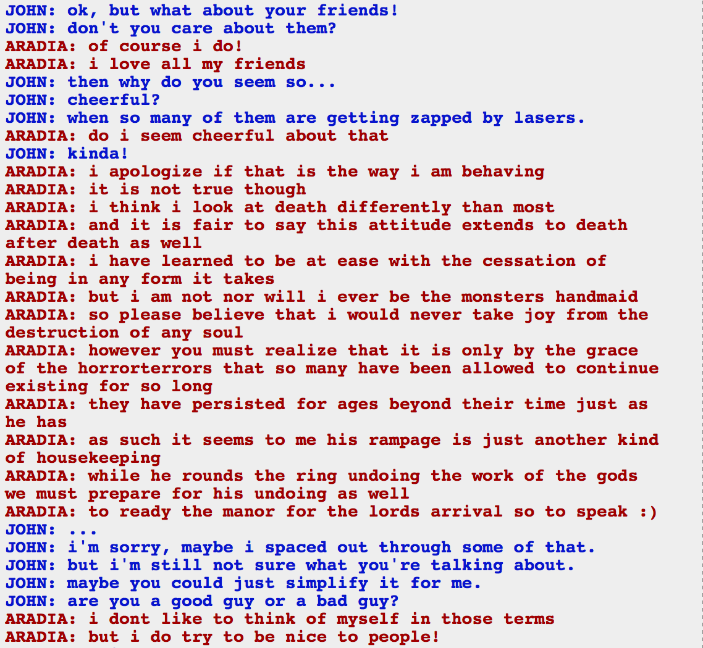
Oh man, Aradia, baby. I didn’t realize/remember she knew about her predecessor being Lord English’s handmaid. That’s got to be a royal mindfuck.
So the Horrorterrors have been keeping ghosties alive. Or existing. I suppose since they can see into the future, at least in some capacity, they would be preparing for the eventuality of Lord English coming after them, and would prepare by making sure Vriska would have a Navy of ghosts to distract him with. And also it is necessary to ensuring the continuation of reality. So the purpose of the ghosts all along was to be exterminated by Lord English. Makes sense, otherwise they’d end up with a near infinity of ghosts.
I wonder if Aradia isn’t gearing up for some kind of self-sacrifice. I just get the feeling.
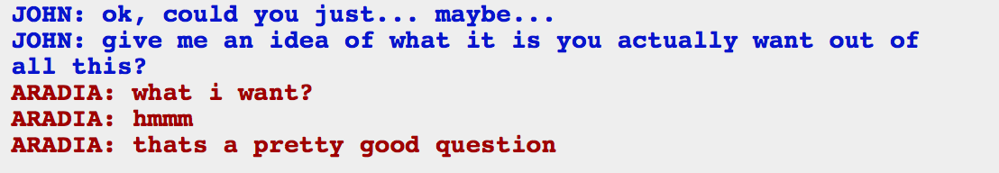
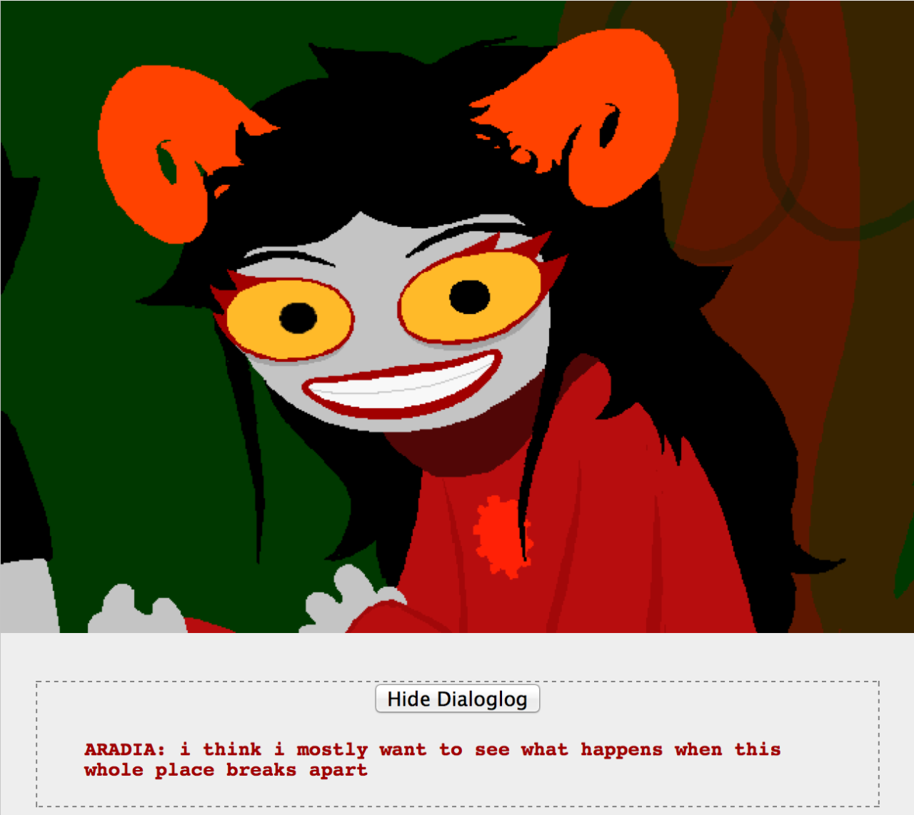
Oh, Aradia, queen of my heart!
Shut up, John, that is perfect motivation.
I mean, reality is under threat anyway, why not enjoy some curiosity!
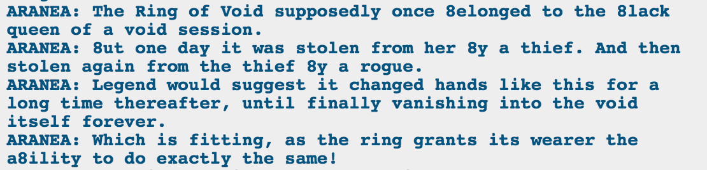
Woah woah woah woah woah.
So, Roxy had an unprototyped ring delivered to her by CD, right? And I totally assumed it was the queen’s ring from that session, the one that she gave to DD and then demanded back. But it sounds like she actually got this Ring of Void. And then she lost it when she was a Trickster, and John found it. Or maybe he found the other ring. Or maybe he found it, and then it will be stolen and given to Roxy. This is probably the part where temporal bullshit gets in the way.

!!!!!!!
John did find the other ring! Temporal bullshit aside, he found it right after Roxy lost the Ring of Void.
Dude, he could give it to Calliope and bring her back to life. I don’t know what that would mean for English, but it probably isn’t good! He didn’t predominate normally, he killed her before he had a chance. Her coming back to life might fuck him up good.


GO TAVROS! You fly right the fuck out of there!
Also don’t think I didn’t notice that Hussie’s Avatar tried to give Vriska the Ring of Life while she was a ghost. That’s some intense meta right there. I thought he just wanted to marry her, turns out he wanted to bring her back from the dead!

NOOOOOOOO!
We only just got them back! They never even said anything. They can’t just leave!